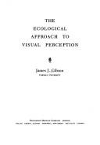

The Ecological Approach to Visual Perception: Classic Edition
Book·James J. Gibson, 1979·视知觉的生态学方法

Gibson proposes that people directly perceive the possibilities for action that the environment offers. This is what he called "affordances."
- Author
- James J. Gibson
- Year
- 1979
- Difficulty
- Advanced
- Kind
- Primary text
- Schools
- Embodied Cognition
- Core theories
- Affordances
Editions
- English edition The Ecological Approach to Visual Perception: Classic Edition James J. Gibson · Psychology Press, classic edition · 2015 Open Library ↗